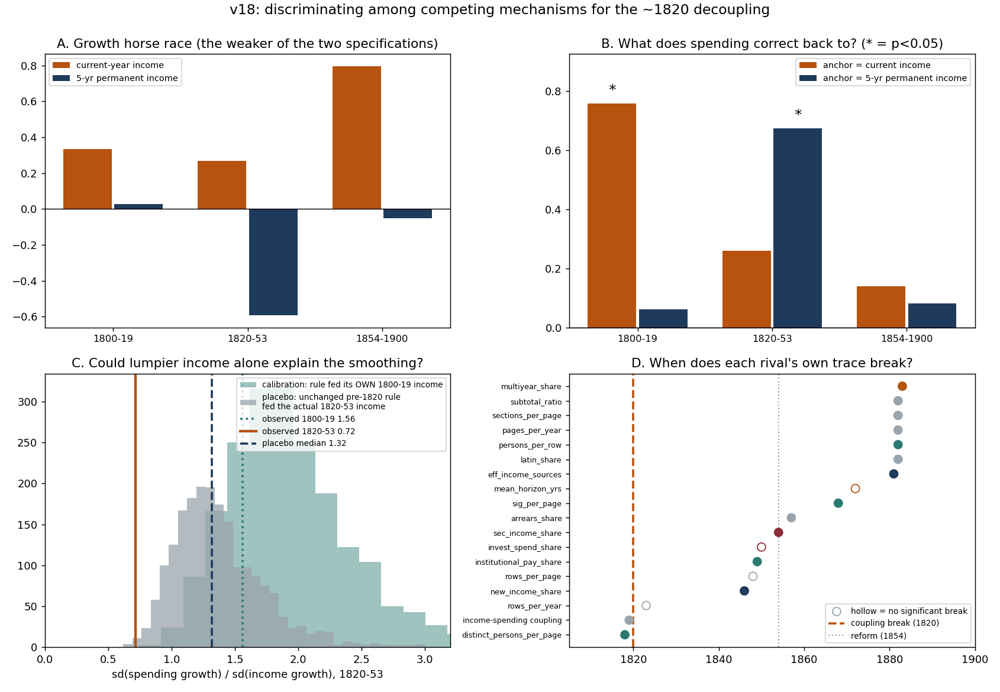
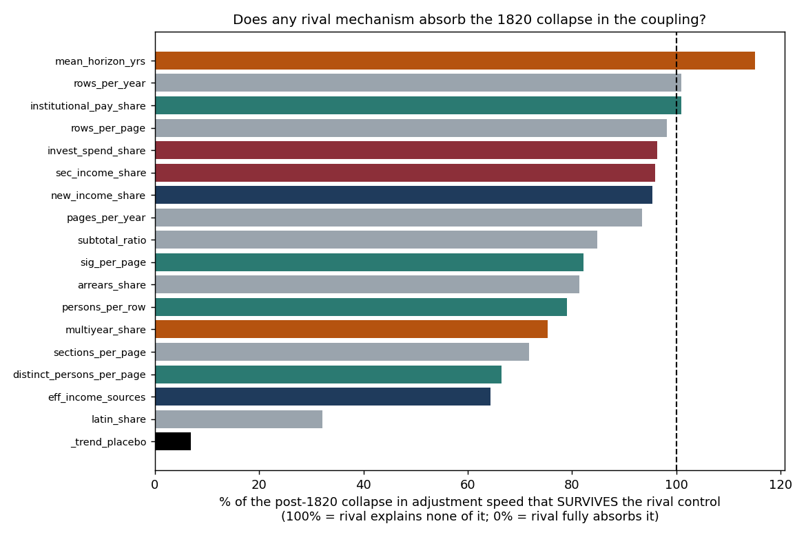

The question for this week: last week proposed that Oxford's budgeting rule changed around 1820. But several other explanations would fit the same evidence. Which of them does the archive actually support? This week treats the budgeting rule as one candidate among six, works out what each one would have left behind in the ledger, and goes looking.
One candidate survives, one is a partial contributor, and four are contradicted. The decision-rule explanation survives because it makes a prediction the others do not — that what spending is anchored to should switch from this year's income to a multi-year average — and that switch is exactly what we find (0.76 to current income before 1820, 0.67 to five-year income after). Revenue diversification turns out to be real but partial: simulating the unchanged old rule against the actual later income reproduces only about 29% of the smoothing, leaving roughly 71% that needs the rule itself to have changed. Governance, planning horizon, financial management and accounting practice all leave datable traces in the ledger, and none of them moves at 1820 — they move between 1846 and 1883, following the 1854 reform rather than preceding the 1820 change.
Two things this week did not deliver, stated up front: one of the tests I built failed (a meaningless time trend absorbs 93% of the effect, so that design cannot attribute anything), and the professor's second test — transitory versus permanent income — came back inconclusive. Both are reported as such below.
Last week's answer was a mechanism: the rule changed from “match spending to this year's receipts” to “hold spending on a smoothed path.” The instruction this week was to stop building support for that answer and start trying to break it. So the budgeting rule goes back on the table as one candidate among several, and each candidate is asked the same three questions:
What would we observe if this mechanism were true? Can we test that in the archive? Does the evidence support it, contradict it, or fail to speak?
| Candidate mechanism | What it would predict | |
|---|---|---|
| M1 | Decision rule | spending stops being anchored to current receipts and becomes anchored to longer-run income; the change is abrupt |
| M2 | Revenue diversification | nothing organisational changed — income simply became lumpier, and any fixed rule fed lumpier income looks like this |
| M3 | Governance | who authorises and receives spending changes at 1820 |
| M4 | Planning horizon | commitments lengthen, so spending mechanically stops tracking the single year |
| M5 | Financial management | real reserves and securities appear and absorb the swings |
| M6 | Accounting practice | the college did not change; the ledger changed how it records |
The same annual series as the last two weeks, over 1800–1900, inflation-adjusted with the Phelps Brown–Hopkins index, with classification and cleaning unchanged from v15. Two additions this week. First, a permanent-income series: the trailing five-year geometric average of income, which is what the college could have known about its longer-run capacity at the time (three- and seven-year versions are run as robustness). Second, a set of mechanism proxies read directly off the pages — how many distinct people are named, how many signature rows appear, how long the payment commitments are, how much investment activity is recorded, how many rows and sections a page carries, and how much Latin survives. These are the traces the non-budgeting candidates would have left.
Two years, 1859 and 1862, are known-bad income extractions — 1859 records £32 of income against £8,353 of spending. Left in, they dominate every volatility statistic. There are three defensible responses: keep them, drop them, or fill them in. We now drop them, because filling them in invents an income path that was never recorded — and, as it turns out, that invented path is not innocent. All three treatments are reported side by side:
| Treatment | 1800–19 | 1820–53 | 1854–1900 | Smoothing ratio, 1800–19 → 1820–53 |
|---|---|---|---|---|
| keep them (what v16/v17 did) | 0.95 | 0.12 | 0.18 | 1.56 → 0.72 |
| drop them (this week) | 0.95 | 0.12 | 0.24 | 1.56 → 0.72 |
| fill them in | 0.95 | 0.12 | 0.30 | 1.56 → 0.72 |
Everything about the 1820 change is identical under all three — that is a fact about the archive. Everything about the post-1854 era depends on the choice — that is a judgement, and it is now labelled as one.
Every number below is reproduced by analysis_v18.py, which runs
deterministically from the ledger data.
If the decision rule changed, then what spending corrects back to should change. Before 1820 spending should be pulled back toward this year's receipts; afterwards toward a multi-year average. We estimate both anchors in the same model, era by era, and let them compete.
| Era | Pull toward current income | Pull toward 5-year income |
|---|---|---|
| 1800–1819 | 0.76 (p = 0.020) | 0.06 (not significant) |
| 1820–1853 | 0.26 (not significant) | 0.67 (p = 0.021) |
| 1854–1900 | 0.14 (not significant) | 0.08 (not significant) |
The two anchors swap places at 1820, exactly as the decision-rule explanation predicts. This is the clearest single result of the week, and it holds whether permanent income is measured over three, five or seven years. None of the rival mechanisms predicts this particular pattern.
Before 1820 the college behaved as though the relevant budget constraint was the year in front of it. After 1820 the relevant constraint became the half-decade. That is a change in the object the budget is set against, not merely in how tightly it is enforced.
The third row was not predicted by anyone. After 1854 spending is anchored to neither income concept. That is either a third regime beginning at the reform, or a sign that the post-1854 income data are too compromised to detect an anchor. The two are currently indistinguishable, and it deserves its own investigation rather than a sentence.
Honest limit: the pre-1820 era supplies only 15 usable observations, because a five-year trailing average cannot begin before 1805 and 1750–99 is an archive gap.
Two versions. First, split income into its permanent and temporary parts and ask which one moves spending. Second, split shocks by sign — do good years and bad years get treated differently, and does that treatment change at 1820?
Reported plainly because it is the honest answer. Two reasonable ways of writing the same test disagree with each other, and the pre-1820 era has too few observations to separate them (p = 0.17 on the change). This is the professor's test (2) in its first form, and this archive does not settle it.
| Era | Response to a positive shock | Response to a negative shock |
|---|---|---|
| 1800–1819 | 1.76 (p = 0.004) | −0.35 (not significant) |
| 1820–1853 | 0.76 (p = 0.013) | 0.05 (not significant) |
| 1854–1900 | 0.81 (p < 0.001) | 0.22 (not significant) |
Before 1820 an unexpectedly good year was spent, and then some. After 1820, less than half as much of it was. Meanwhile bad years were never passed through to spending, in any era.
This matters for telling two stories apart. If the mechanism were “a reserve appeared” (M5), the first thing we should see is protection on the downside — that is what reserves are for. The downside is precisely where nothing changes. What changed is that the college stopped automatically spending money it happened to receive. That is a rule, not a buffer.
Strength: suggestive. The direction is consistent across all three eras, but the formal test of the change in the windfall response is p = 0.13.
The smoothing ratio itself was established last week (1.56 before 1820, 0.72 after). The real question this week is why it moves. Look at the two halves separately: spending volatility falls modestly (0.64 → 0.49), but income volatility rises sharply (0.41 → 0.68). Most of the ratio's movement comes from the income side — which is exactly what the diversification rival predicts, and the reason it has to be taken seriously.
So we test it directly. Estimate the pre-1820 rule once. Then run that fixed, unchanged rule forward from 1820, driven by the actual 1820–53 income. If lumpier income alone explains the smoothing, the simulation should reproduce it.
| Smoothing ratio | Reading | |
|---|---|---|
| Calibration check: the rule fed its own 1800–19 income | 1.87 [1.14, 3.21] | against an observed 1.56 — the simulator reproduces the era it was fitted to |
| Placebo: the unchanged rule fed the actual 1820–53 income | 1.32 [0.86, 2.22] | against an observed 0.72; 99.7% of simulations are less smooth than what Oxford actually did |
Breaking the fall from 1.56 to 0.72 into its parts: income composition accounts for about 29% of it; the remaining 71% requires the rule itself to have changed.
This is a more useful answer than either “diversification explains it” or “diversification is irrelevant.” Diversification is a real contributor of roughly three-tenths. It is not sufficient.
The calibration step is what makes this a test rather than an assertion. A simulator that could not reproduce the era it was fitted to would tell us nothing about the era it was not.

Every rival mechanism, if true, leaves something datable in the ledger. A mechanism whose own trace only moves in 1868 cannot explain a change in 1820. So we run the same break-detection scan on each proxy and compare the dates.
| Mechanism | Trace in the ledger | Break |
|---|---|---|
| the thing being explained | income–spending coupling | 1819 |
| M2 diversification | non-endowment share of income | 1846 |
| M3 governance | institutional payee share | 1849 |
| M5 financial management | securities income | 1854 |
| M6 accounting | arrears share | 1857 |
| M3 governance | signature rows per page | 1868 |
| M2 diversification | effective number of income sources | 1881 |
| M3 governance | named people per row | 1882 |
| M6 accounting | Latin share, sections, subtotals, pages per year | 1882 |
| M4 planning horizon | multi-year share of spending | 1883 |
| Rows per year, rows per page, investment purchases and commitment length show no statistically detectable break anywhere. | ||
Nothing comes near 1820. Every rival's trace moves between 1846 and 1883, clustered on the 1854 reform and the 1870s–80s. The change in how Oxford spent has no observable companion in how it was governed, how long it committed, what it invested in, or how it kept its books.
Distinct people named per page does break at 1818 — a governance signal, on the face of it. But rows per page falls at the same moment, from 33.3 to 26.8, and a page with fewer lines names fewer people. Divide the page layout out, and the same marker breaks in 1882. The raw version would have handed the governance explanation a false positive; that is why the density-normalised proxy is in the table.
The natural next move is to put each rival proxy into the model as a control and see whether the 1820 effect survives. I built that test, and then added a linear time trend as a meaningless placebo rival, to check the test's power.
The meaningless trend absorbs 93% of the effect: the 1820 coefficient goes from −0.42 (p = 0.021) to −0.03 (p = 0.95). Not one real rival comes close.
With a single 99-year series, any smoothly-moving variable can soak up a step change. So the test has essentially no power, and the fact that the Latin-share proxy also reduces the effect by 68% is not evidence for an accounting explanation — the meaningless trend does better.
I am reporting this rather than deleting it because the failure is itself informative. This archive cannot discriminate mechanisms by controlling for them. It can discriminate only by distinctive predictions (Test 1), by break-date coincidence (Test 4), and by simulation (Test 3). Getting the controlling approach to work needs several institutions whose governance changed at different dates — a data-collection problem, not a statistical one.
A drift is what most rivals imply: diversification, lengthening horizons and the shift from Latin to English are all gradual. An abrupt change is what a rule implies — rules are adopted, not drifted into. Comparing model fit: a single abrupt change at 1819–1820 is preferred over a smooth trend, and a second change is decisively rejected.
In a restricted version of this comparison — where only the coupling term is allowed to differ across regimes — the best break moves to the 1860s and the 1820 step looks no better than a trend. For a few hours this week that looked like the 1820 story falling apart. It is the restriction talking: the eras differ in their short-run dynamics too, and a model forbidden from saying so pushes that difference through the coupling term instead. Fully specified, the break returns to 1819. Both versions are in the output files.

| Mechanism | Verdict | Confidence |
|---|---|---|
| M1 decision rule | Supported — the only candidate whose distinctive prediction (the anchor switch) is confirmed, and the change is abrupt as a rule change implies | strong |
| M2 diversification | Partial — a real contributor of about 29% of the smoothing, but insufficient on its own | strong |
| M3 governance | Not supported at 1820 — the markers move with the 1854 reform; the single 1818 hit is a page-layout artefact | medium — proxies are indirect |
| M4 planning horizon | Contradicted — horizons lengthen half a century too late, and multi-year commitments are only 2–4% of spending | strong |
| M5 financial management | Not supported as the cause — what changed is the response to windfalls, not to shortfalls; financial assets arrive with the reform | medium — the reserve stock is unobserved |
| M6 accounting practice | Not supported — the ledger's form changes between 1854 and 1882, never at 1820 | strong |
Full detail, including every specification and robustness check summarised here, is in
FINDINGS_v18.md and the t0–t6 output files.